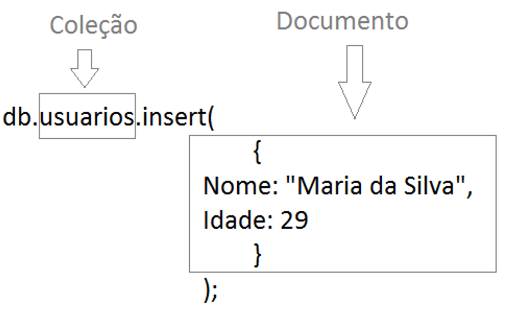

Structured Data Base
With the PotsgreSQL we studied and created relational databases, which are those organized in interrelated tables with a fixed schema and predefined formats.
This type of database uses single commands based on queries, which are also separated into three main groups (there are other more specific groups)
DDL
Defining and modifying the structure of databases, such as creating and modifying tables.
DDL
Inserting, updating, deleting and consulting data in databases.
DDL
Primarily search, but also query and retrieve data from databases.
Normalization
Normalization is the process of organizing data in relational databases to minimize redundancy and ensure integrity by dividing it into smaller, more cohesive tables.
First Normal Form (1FN):
Eliminates redundancy by ensuring that each value is atomic and that each column has a unique name, simplifying query and update operations.
Second Normal Form (2FN):
Eliminates partial dependencies by requiring each column to depend completely on the primary key, reducing data manipulation anomalies.
Third Normal Form (3FN):
Eliminates transitive dependencies, ensuring that each non-key attribute depends only on the primary key, which simplifies maintenance and reduces redundancy.
NoSQL Data Bases
Non-relational databases, or No Structured Query Lenguage, can store data in formats that don't follow a rigid schema, such as documents, emails, videos and social media posts. It`s ideal for applications that deal with large volumes of varied data, such as sentiment analysis, text search and multimedia content management.
JSON (JavaScript Object Notation) is a lightweight data format, easy to read and write, using a key-value structure. BSON (Binary JSON) is a binary version of JSON, used by MongoDB, which is optimized for storage and fast querying, supporting additional data types.

Collection = Groups of related documents (= Table in the Relational Model)
Documents = Set of fields and values ( = Rows in the Relational Model)
How you may have noticed, we also utilized the Atlas MongoDB NoSQL database system in our classes to study how they offer the flexibility and scalability to deal with large volumes of unstructured and rapidly evolving data, meeting the demands of modern applications. In addition, they are essential for understanding technologies used in big data, real-time analysis and agile development.